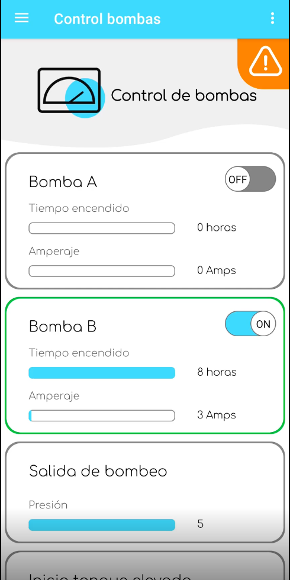
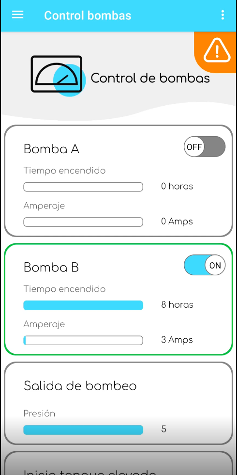

1. Torneos By Zurda (2025)
A platform for managing volleyball tournaments with live scoreboards, player statistics, ranking tables, and live streaming.
Tech: Flutter, Firebase
- Real-time scoreboard updates
- Player and team statistics
- Tournament ranking tables
- Live streaming support


2. Insevig Custody (2024)
Logistics solution for managing custody requests of vehicles and shipments with tracking, approvals, and secure workflows.
Tech: Flutter, Firebase
- Custody request creation and validation
- Tracking custody process in real time
- Custom user roles for drivers, admins, and clients

3. Insevig Logs (2024)
Digital logbook application for automating vehicle and personnel access registration.
Tech: Flutter, Firebase
- Custom log creation and visualization
- Real-time access records
- Cloud database for centralized reports


4. CIR Forms (2023)
Mobile-first survey app designed for field data collection, including offline mode and secure synchronization.
Tech: Flutter, Firebase
- Customizable survey creation
- Offline-first data collection
- Automatic cloud sync when online


5. Agua Pol (2022)
IoT-based app for monitoring water levels in tanks with real-time alerts and visualization dashboards.
Tech: Android (Java), Firebase
- Real-time water level monitoring
- Automatic alerts when levels are low
- Dashboard with historical data
 

6. La Fabril Reports (2021)
Application for digitalizing industrial reports, replacing paper processes with automated digital forms.
Tech: Flutter, Firebase
- Digital replacement for paper reports
- Automatic data export to cloud
- Improved reporting efficiency